מאמרים ושיעורים
מאמרים תורניים, חידושים, שיעורי עיון, אבילות נכונה וכולל פנסיונרים
411 פריטים
הקול החמישי – ההודיה בחתונה ובשבע ברכות (24)
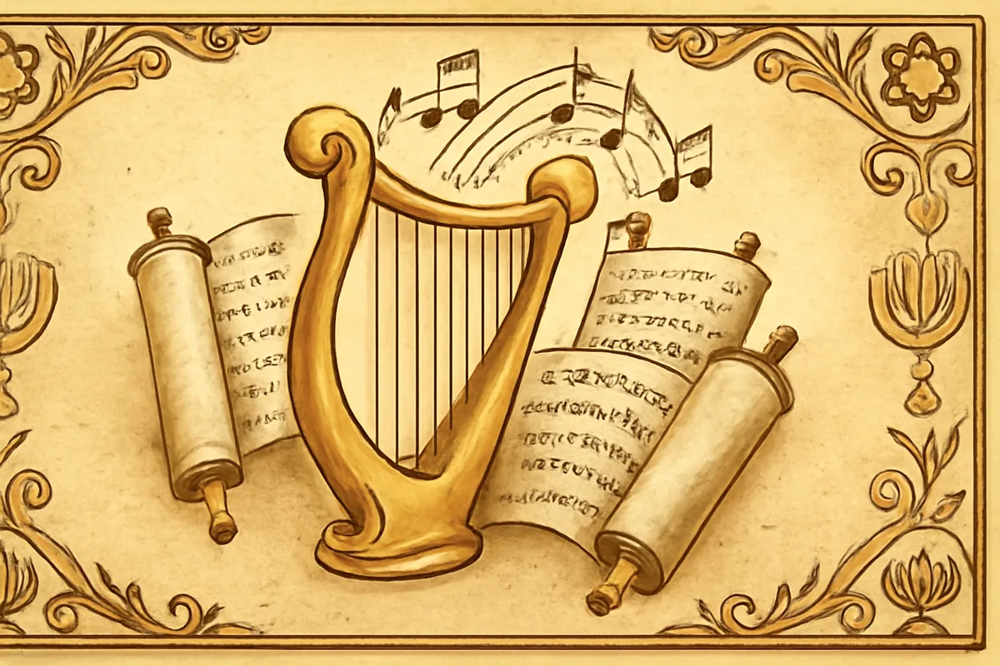
הקול החמישי - בחתונה
רעיונות נפלאים להודיה בחתונה קרא עוד השיר - לכבוד החתן בחור מעם קרא עוד סיבת השמחה הגדולה השיר - שמח תשמח רעים…
רעיונות נפלאים להודיה בחתונה
ראון כאן בהרחבה או כאן בקובץ הקול החמישי - להכניס את ההודיה לחתונה.pdf
השיר - לכבוד החתן בחור מעם
מקהלות עם / ר' מרדכי עבאדי מַקְהֵלוֹת עַם בָּרְכוּ אֵל הָרִימוּ קוֹל כֹּחַ וָאֵל יָגֵל יַעֲקֹב יִשְׂמַח יִשְׂר…
סיבת השמחה הגדולה
השיר - שמח תשמח רעים אהובים בס"ד מהגאון ר' שלמה זלמן אויערבך זצ''ל טעם החיוב לשמח חתן וכלה חז"ל הפליגו מאד בחי…
מקדש עמו ישראל - על ידי חופה וקידושין
ישיש עליך אלוקיך - כמשוש חתן על כלה ההבדל בין קדושת התורה לתפיסת אומות העולם שתי גישות מנוגדות לקדושה תפיסת או…
קדושת הכלל: עומק מיוחד בברכת האירוסין
השיר ידיד נפש קדושת הכלל: עומק מיוחד בברכת האירוסין בואו נתבונן יחד בעומק מופלא הטמון בברכת "אשר קדשנו במצוותי…
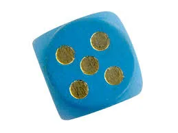
שמחת בית השואבה - ושמחת חתן וכלה
שמחם בבנין שלם או אדיר הוא יבנה ביתו בקרוב העומק הפנימי בשמחת המצווה: בין בית השואבה לחתן וכלה שורש השמחה: גיל…
המטרה הפנימית של שבע ברכות - הודיה
שיר - כי הרבית העומק הנפלא בהודיה: המבט הפנימי על שבע ברכות בואו נתבונן יחד בסוד עמוק ומופלא הטמון בתקנת חז"ל …
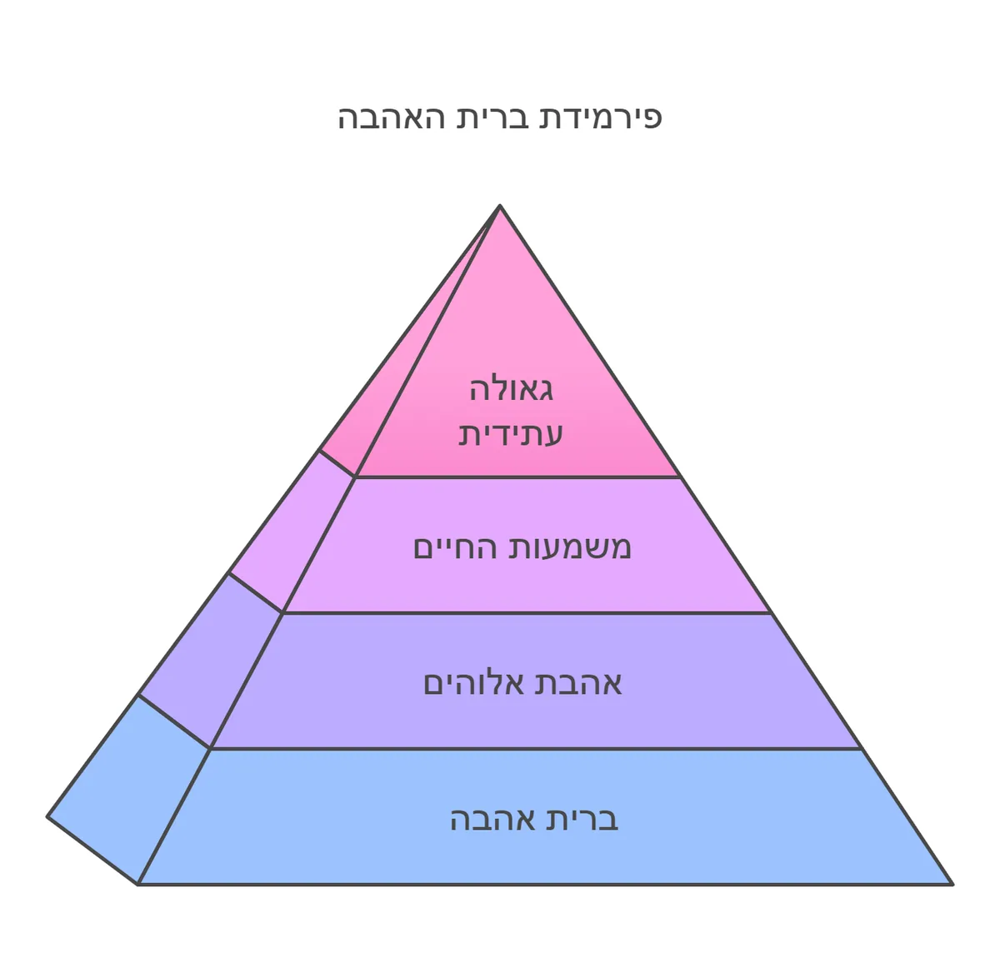
ברית היהדות - נישואין
ישיש עליך אלוקיך עומק הנישואין: מבט על ברית האהבה בין השי"ת וכנסת ישראל בואו נתבונן יחד בעומק מופלא הטמון במהו…
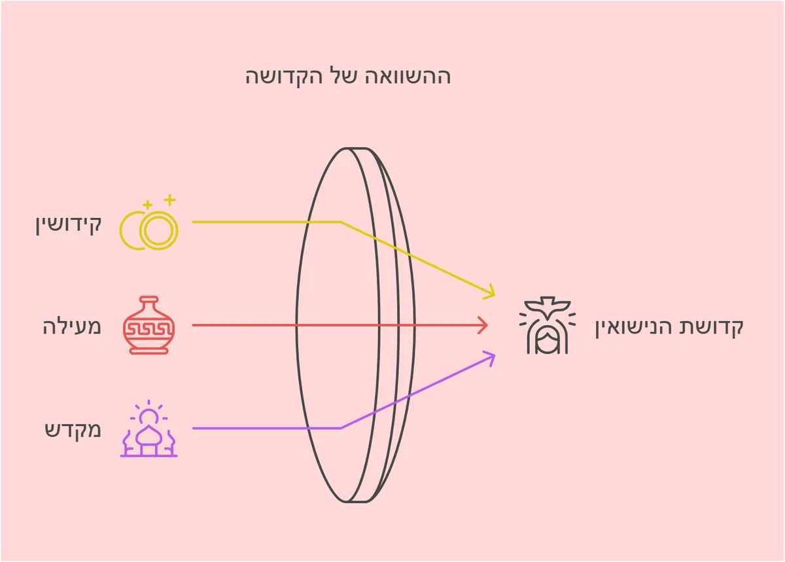
עומק הקדושה בקידושין
השיר אנא בכוח עומק הקדושה בקידושין: בין קידוש ה' למעילה בקודש הנה דבר מופלא מתגלה לנו בלשון הקודש שבחרו חז"ל. …
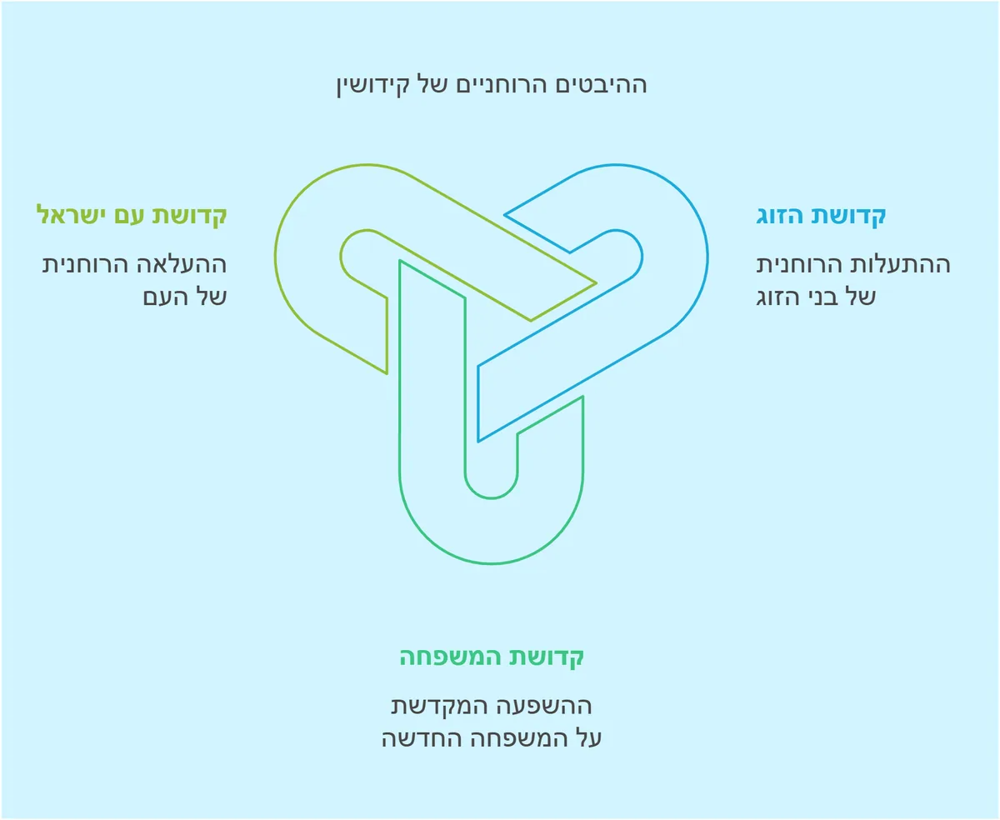
העומק הנפלא בשם "קידושין": מבט פנימי על קדושת הנישואין
שיר ידיד נפש - אברהם פריד העומק הנפלא בשם "קידושין": מבט פנימי על קדושת הנישואין יסוד נפלא מתגלה לנו בבחירת חז…
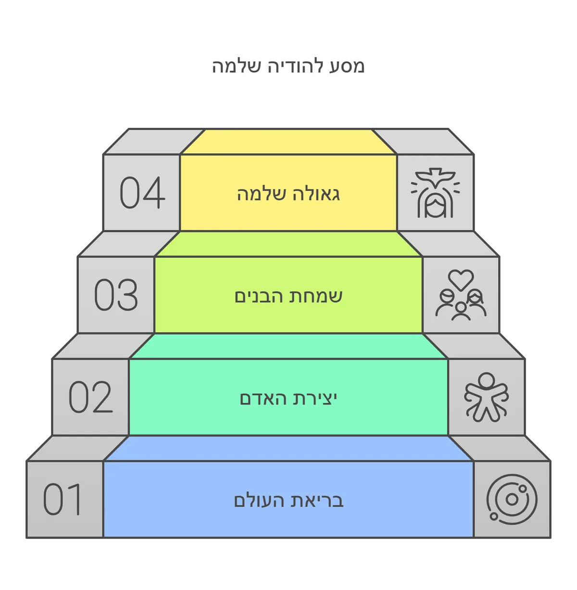
מבראשית עד אחרית
השיר - כי לא תמו חסדיך העומק הנפלא בשבע ברכות: מבראשית עד אחרית יסוד מופלא מתגלה בתקנת חז"ל של שבע ברכות, המאי…
באור השבע ברכות - בקצרה
ברכת הבריאה, וברכות השמחה שאלות חלק את שש ברכות הנישואין (מלבד הגפן) לשתי קבוצות ? מדוע תקנו חז''ל להודות על ב…
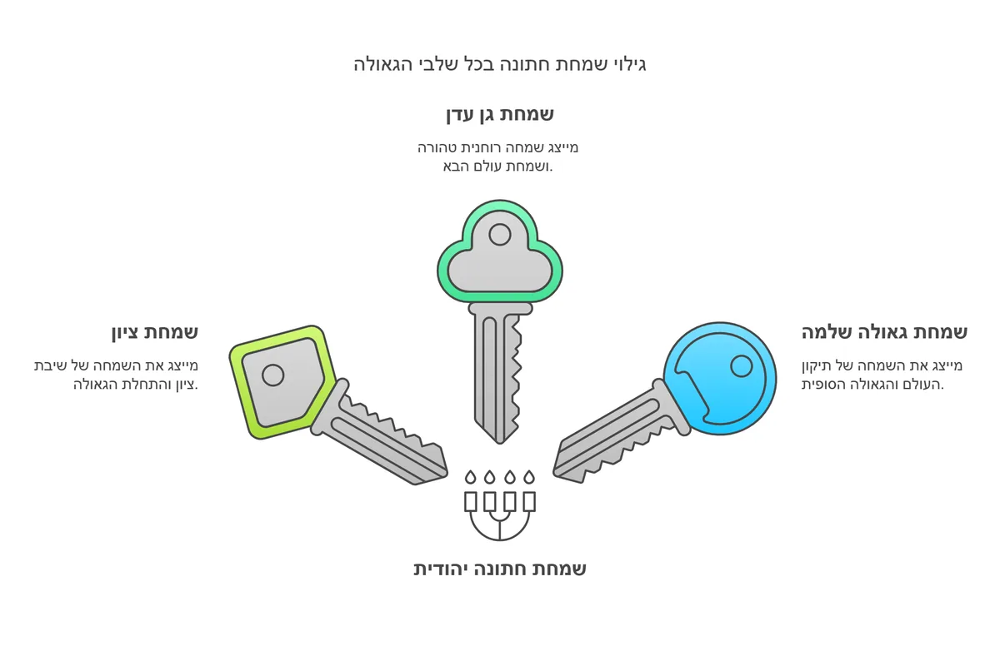
סולם השמחה
שמח תשמח העומק הנפלא בהודיה על רגשות הקודש: מבט פנימי על השמחה האלוקית הבה נתבונן יחד בסוד עמוק ומופלא: מדוע ד…
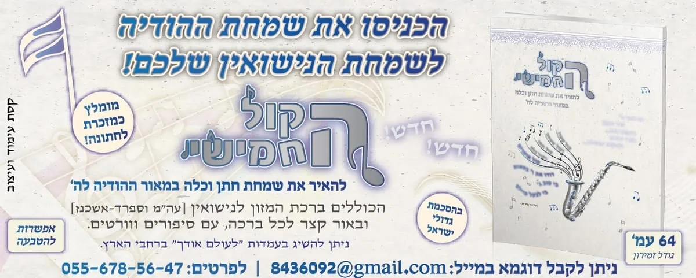
תעלומת הקול החמישי
מהי תעלומת הקול החמישי בשבע הברכות? או מדוע גנבו את קול תודה מהחתונה? מה מתרץ המהרש''א בקיצור? הוכח מתירוץ המה…
שני חלקי הודיה על נס
שני חלקים בשבע ברכות ובקול החמישי שאלות אדם שקרה לו נס או חסד ה' , באלו שני דברים הוא חייב? ומנין? היכן שני חל…
ברכת שהשמחה במעונו
ענינה ומהותה שאלות שהשמחה במעונו. היכן נמצא המעון של ה'? ומי נמצא שם? בוזאת הברכה אומרים "מענה אלוקי קדם" מדוע…
הלכות שבע ברכות
שאלות מי חייב בשבע ברכות: החתן, הכלה, או המסובים? מדוע בעלי השמחה צריכים להשתדל שלא להאריך בסעודה? כמה אנשים צ…
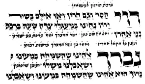
דוי הסר
באורו והלכותיו שאלות חתן וכלה הם דוגמת חתן וכלה שלמעלה . הסבר! איזה נפ''מ למעשה יש מזה? הסבר לפי זה מדוע תקנו …
חמשה קולות במתן תורה ובנישואין
הקול החמישי - בחתונה הקול החמישי במתן תורה הקול החמישי במתן תורה הקשר בין מתן תורה לנישואין אמרו חז''ל (גמ' בר…
הכוס החמישית
הלשון החמישית בגאולת מצרים שמות פרק ו (ו) לָכֵן אֱמֹר לִבְנֵי יִשְׂרָאֵל אֲנִי יְדֹוָד וְהוֹצֵאתִי אֶתְכֶם מִת…
להחזיר את השפע
כתב הרב פינקוס בספרו שבת מלכתא (על תפילת 'אתה אחד'): כל שפע היוצא מאת הקב"ה נקרא חסד. ואמנם כלל גדול הוא בלי י…
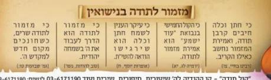
מזמור לתודה בחתונה
טעם ראשון מזמור לתודה יש לאומרה בנגינה, שכל השירות עתידות ליבטל חוץ ממזמור לתודה. (שולחן ערוך סימן נא סעיף ט) …
בנין עד עד - צלם אלוהים
🌟 "בצלמו... והתקין לו ממנו בנין עדי עד" - הסוד העמוק של השבע ברכות 💎 המקור וההסבר ההלכתי: שאלה נפלאה שמגיעה לל…
חתונה ובית יהודי – חוברות ומאמרים (15)
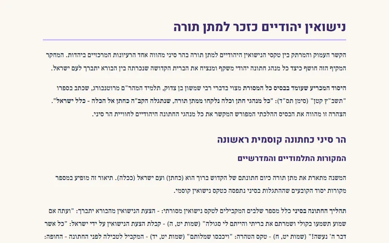
נישואין יהודיים כזכר למתן תורה
הקשר העמוק והמרתק בין טקסי הנישואין היהודיים למתן תורה בהר סיני מהווה אחד הרעיונות המרכזיים ביהדות. המחקר המקי…
ששון ושמחה בבית היהודי
ספר חדש הלכות דיבת הארץ קרא עוד
הקול החמישי – ההודיה בחתונה
הקול החמישי ההודיה בחתונה עמדות לעולם אודך ברחבי הארץ רשימת העמדות שמוכרות מוצרי קול תודה. לחץ כאן לקריאה קטלו…
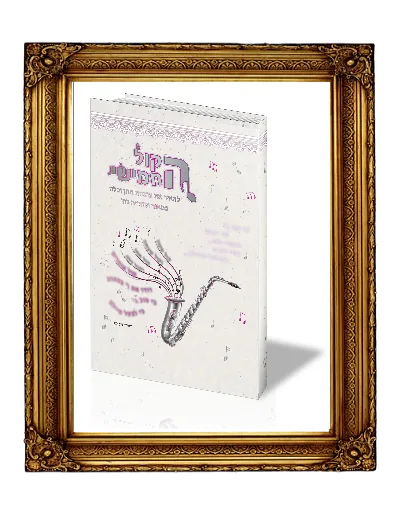
חתונה מלאה שמחה
חתונה מלאת שמחה הקול החמישי - לשמחת חתן וכלה לחוש את ההודיה בחתונה, עם סיפורים תפילות וברכהמ"ז לנישואין בהקמת …
מפתח החיים – הכנה ללידה ואוצר ההודיה לבת המצווה
חתונה מלאת שמחה הקול החמישי - לשמחת חתן וכלה לחוש את ההודיה בחתונה, עם סיפורים תפילות וברכהמ"ז לנישואין בהקמת …
שטר התנאים: - תמונות סוריאליסטי (Surrealism) (מצגת)
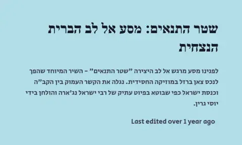
שטר התנאים - גירסה חלקית (מצגת)
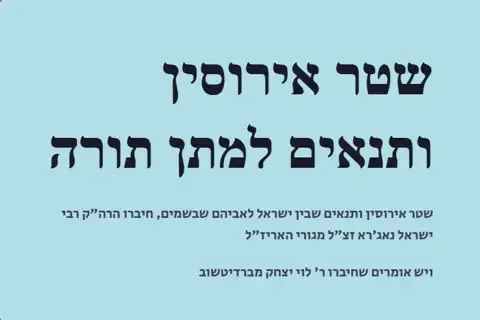
שטר התנאים - אברהם פריד (מצגת)
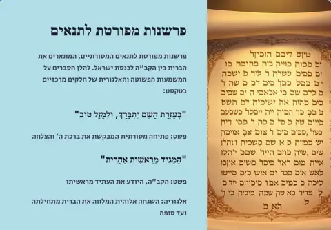
פרשנות מפורטת לתנאים (מצגת)
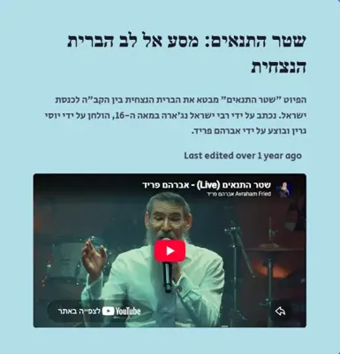
שטר התנאים: מסע אל לב הברית הנצחית (מצגת)
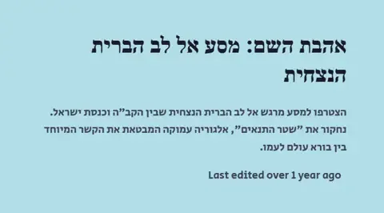
אהבת השם: מסע אל לב הברית הנצחית (מצגת)
קונטרס סיבת הנישואין - הרב יהודה טאוב
ששון ושמחה בבית היהודי ספר חדש הלכות דיבת הארץ ספר חדש הלכות דיבת הארץ "טוֹבָה הָאָרֶץ – הלכות דיבת הארץ" מאת …
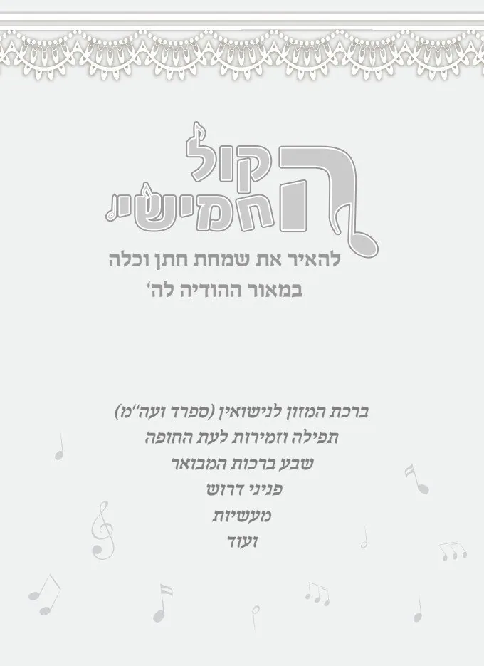
הקול החמישי - ההודיה בחתונה
כתבה בעיתון קול ברמה על הרב דביר- שמדבר על הודיה בחתונה הרב דביר דורש בחתונה בנושא ההודיה לה' לשמיעת סדרת שיעו…
הקול החמישי - לשמחת חתן וכלה
לחוש את ההודיה בחתונה, עם סיפורים תפילות וברכהמ"ז לנישואין בהקמת בית יהודי יש חמשה קולות: 1.קוֹל שָׂשׂוֹן 2.וְ…
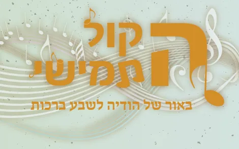
הקול החמישי - לשבע ברכות
באור נפלא מלא רגשות הודיה לשבע ברכות הנישואין ביאור קל ועממי לשבע ברכות, עם טעם מתוק של הודיה. ■ הכנה נפלאה לח…
לידה, תפילות ליולדת והודיה על הולדת ילד (49)
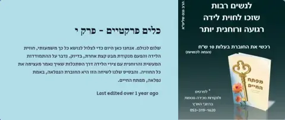
כלים פרקטיים - פרק י (מצגת)
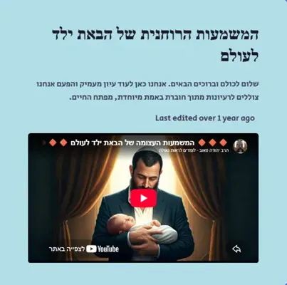
המשמעות הרוחנית של הבאת ילד לעולם (מצגת)
לזכות בכפלים מפתח החיים (מצגת)
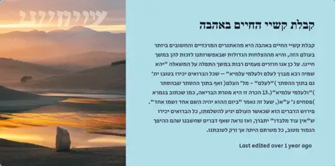
מפתח החיים - קבלת קשיי החיים באהבה (מצגת)
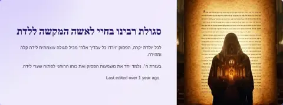
סגולת רבינו בחיי לאשה המקשה ללדת (מצגת)
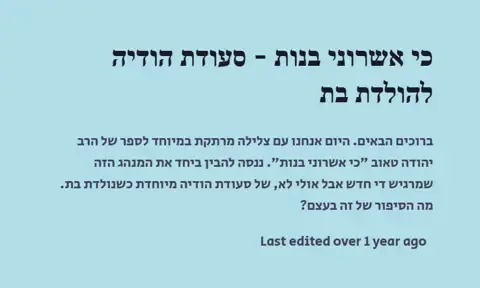
כי אשרוני בנות - סעודת הודיה להולדת בת (מצגת)
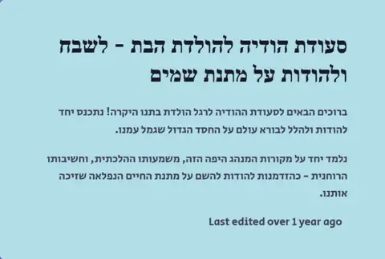
סעודת הודיה להולדת הבת - לשבח ולהודות על מתנת שמים (מצגת)
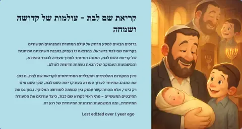
קריאת שם לבת - עולמות של קדושה ושמחה (מצגת)
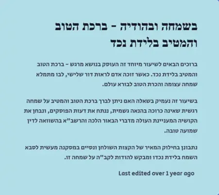
בשמחה ובהודיה - ברכת הטוב והמטיב בלידת נכד (מצגת)
ברכת הטוב והמטיב בלידת נכד - בין שמחה גשמית לרוחנית (מצגת)
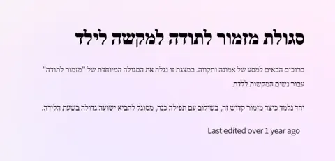
סגולת מזמור לתודה למקשה לילד - לנשים (מצגת)
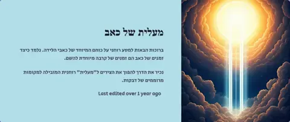
מעלית של כאב (מצגת)
מעלית של כאב
פודקאסט: תינוק ברחם לומד את כל התורה (מצגת)
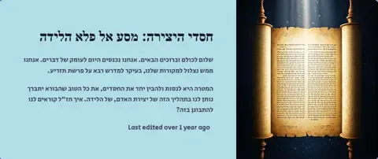
חסדי היצירה: מסע אל פלאי הלידה - א (מצגת)
רשימת המצגות - להודיה אחרי הלידה (מצגת)
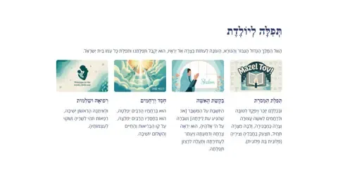
תפלה ליולדת (מצגת)
תפלה ליולדת
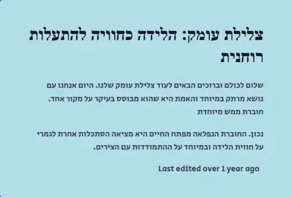
צלילת עומק: הלידה כחוויה להתעלות רוחנית (מצגת)
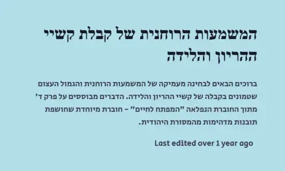
המשמעות הרוחנית של קבלת קשיי ההריון והלידה (מצגת)
התעמקות: משמעות הייסורים בלידה (מצגת)
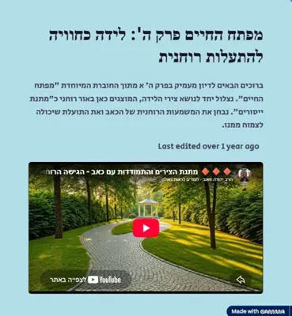
מפתח החיים פרק ה': לידה כחוויה להתעלות רוחנית (מצגת)
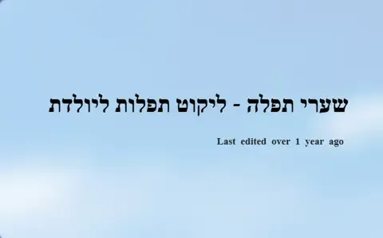
שערי תפלה - ליקוט תפלות ליולדת (מצגת)
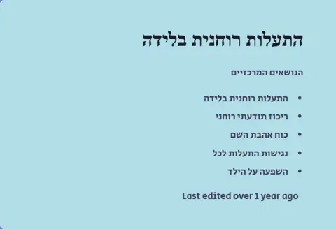
התעלות רוחנית בלידה (מצגת)
התעלות רוחנית בלידה
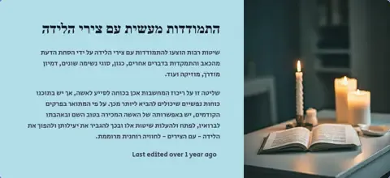
התמודדות מעשית עם צירי הלידה (מצגת)
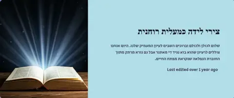
צירי לידה כמעלית רוחנית (מצגת)
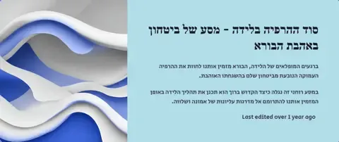
סוד ההרפיה בלידה - מסע של ביטחון באהבת הבורא (מצגת)
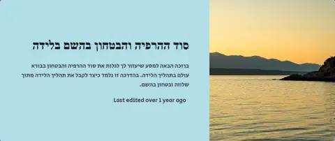
סוד ההרפיה והבטחון בהשם בלידה (מצגת)
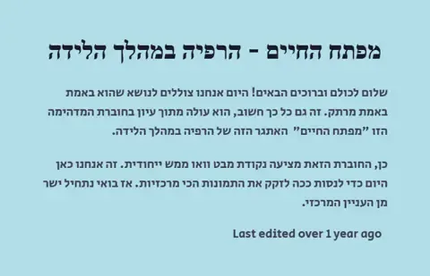
מפתח החיים - הרפיה במהלך הלידה (מצגת)
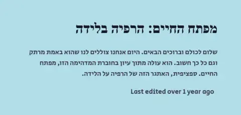
מפתח החיים: הרפיה בלידה (מצגת)
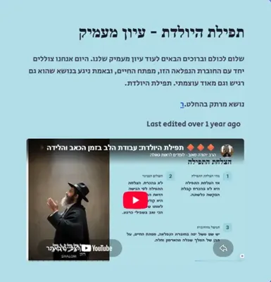
תפילת היולדת - עיון מעמיק (מצגת)
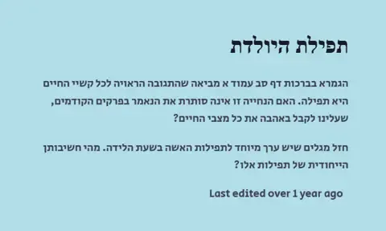
תפילת היולדת (מצגת)
תפילת היולדת
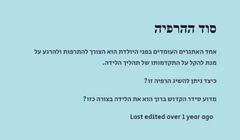
סוד ההרפיה בלידה (מצגת)
סוד ההרפיה בלידה
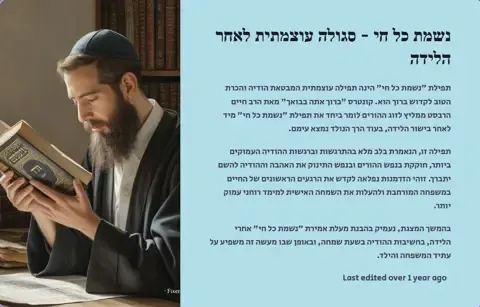
נשמת כל חי - סגולה עוצמתית לאחר הלידה (מצגת)
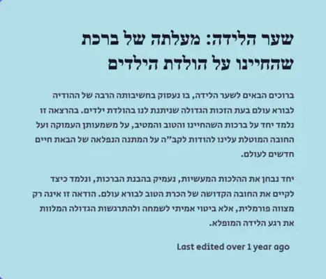
שער הלידה: מעלתה של ברכת שהחיינו על הולדת הילדים (מצגת)
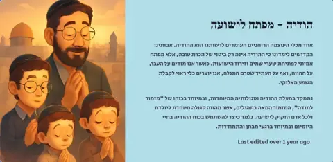
סגולת מזמור לתודה - ללידה קלה (מצגת)
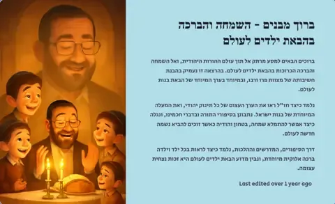
ברוך מבנים - השמחה והברכה בהבאת ילדים לעולם (מצגת)
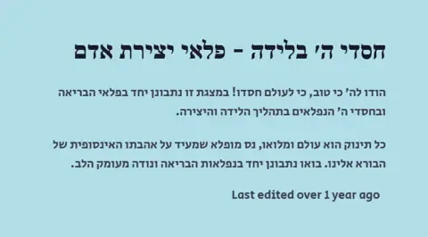
חסדי ה׳ בלידה - פלאי יצירת אדם (מצגת)
לבנות - סדר אמירת קרבן יולדת - בזמן הזה (מצגת)
סדר אמירת קרבן יולדת - בזמן הזה (מצגת)
טעמי קרבנות יולדת (מצגת)
טעמי קרבנות יולדת
סגולות ותפילות ליולדת - אוצר רוחני של ישועות ורחמים (מצגת)
הקדושה של יולדת: המתנה הגדולה ביותר בבריאה (מצגת)
חשיבות הלידה בעולם היהודי (מצגת)
חשיבות הלידה והבאת ילדים לעולם - מבט תורני (מצגת)
ברכת התודה - הודיה להשם אחרי הלידה (מצגת)
אוצר מיוחד ליולדת: תפילות וסגולות עתיקות - לא מוגה (מצגת)
תפילות וסגולות ללידה בשלום - ויהי נועם יושב בסתר (מצגת)
קונטרס "ברוך אתה בבואך" - תפילות ומזמורים ליולדת - לנשים (מצגת)
הודיה לאחר הלידה (מצגת)
הודיה לאחר הלידה
מפתח המצגות על תפילה ליולדת (מצגת)
ברית מילה ושלום זכר (50)
סעודת היום השלישי למילה - מנהג עם שורשים עמוקים (מצגת)
שיחה מעמיקה על ברית מילה וקורבן פסח (מצגת)
סעודת היום השלישי לברית המילה (מצגת)
הכנות לברית מילה - מדריך מקיף (מצגת)
תוספות מיוחדות לברכת המזון בסעודת ברית מילה (מצגת)
פודקאסט בנושא תורני - גמ"ח ברכונים לברית מילה (מצגת)
מנהג החיקה בברית מילה - שורשים ומשמעויות (מצגת)
ברכות שאחרי ברית המילה - עיון מעמיק (מצגת)
מנהגי ברית המילה - עיון מעמיק (מצגת)
בכי של תינוק בברית מילה - עת רצון לתפילה (מצגת)
ברכות ברית המילה - משמעויות עמוקות (מצגת)
המשמעות הרוחנית של מצוות ברית מילה (מצגת)
משמעות מצוות ברית מילה (מצגת)
מצוות ברית מילה - משמעויות עמוקות מעבר לפעולה הפיזית (מצגת)
ברית מילה: משמעות עמוקה דרך ספר שערי אהבה (מצגת)
עיון מעמיק: שמחת ברית מילה (מצגת)
שערי אהבה: עיון מעמיק במשמעות ברית המילה (מצגת)
ברית - מעבר להסכם: משמעותה העמוקה של ברית המילה (מצגת)
סעודת ברית מילה - משמעות ומנהגים (מצגת)
מנהגים מיוחדים בסעודת ברית מילה במסורת אשכנז (מצגת)
ששון ברית המילה: עומק השמחה והקשר לתורה (מצגת)
ברית מילה שלא בזמנה - דיון הלכתי מעמיק (מצגת)
מצוות ברית מילה - מטרתה ותועלתה - ספר שלם מהרב /שטיינהויז (מצגת)
כיבודים בטקס ברית המילה - מסורת ומשמעות (מצגת)
ליל שימורים: המשמעות העמוקה של המנהג לפני ברית מילה (מצגת)
קרישמליינן - מנהג השמירה לפני ברית המילה (מצגת)
מנהגי ברית המילה (מצגת)
מנהגי ברית המילה
שלום זכר - כוחה של השפעת השבת (מצגת)
קדושת השבת שלפני הברית (מצגת)
שלום זכר - המשמעות העמוקה של המנהג (מצגת)
הקשר שלנו עם הבורא יתברך דרך הבריתות (מצגת)
הקשר בין ברית המילה לארץ ישראל (מצגת)
הקשר החזק והנפלא בין מצות ברית-המילה להבטחת ארץ-ישראל (מצגת)
ברית מילה: בין כפייה לאהבה (מצגת)
ברכת "כשם שנכנס לברית, כן יכנס לתורה, לחופה ולמעשים טובים (מצגת)
השמחה במצוות ברית המילה (מצגת)
סעודת ברית מילה - משמעות עמוקה מעבר לחגיגה (מצגת)
התעמקות בברית המילה (מצגת)
התעמקות בברית המילה
ברית מילה - סיכום ספר שלי שער אל הקדושה והתחייבות לשמחה (מצגת)
מפתח - מנהגי שלום זכר (מצגת)
עיון מעמיק במקורות: משמעות מנהגים סביב הולדת תינוק (מצגת)
שלום זכר - המשמעות העמוקה מאחורי המנהג (מצגת)
שלום זכר: מנהג, מקורות והלכה (מצגת)
מנהג התעטפות בטלית בברית מילה (מצגת)
מצוות ברית מילה - מטרתה ותועלתה (מצגת)
בריתות ביהדות (מצגת)
בריתות ביהדות
מפתח – שיעורי ברית מילה (מצגת)
ברית מילה - הזכות המופלאה (מצגת)
משמעות סעודת שלום זכר (מצגת)
סעודת שלום זכר - משמעויות ומקורות (מצגת)
חלאקה, תפילין ובר מצווה (18)
מנהג החלאקה (מצגת)
מנהג החלאקה
סעודת בר המצווה - משמעויות עמוקות (מצגת)
טעם מצוות הנחת פאות הראש (מצגת)
משמעות רוחנית של שמחת בר המצווה (מצגת)
משמעות התפילין וגיל בר המצווה (מצגת)
תפילין - חותם האהבה בין ישראל לקב"ה (מצגת)
תפילין - אות אהבה בין ישראל לקב"ה (מצגת)
למה מניחים תפילין (מצגת)
למה מניחים תפילין
בר מצווה - המשמעות הרוחנית העמוקה (מצגת)
המקור לחגיגת הבר מצווה "כיום שנכנס לחופה (מצגת)
בר מצווה - משמעות עמוקה מעבר למסיבה (מצגת)
שמחת הבר מצווה: המשמעות העמוקה (מצגת)
בר מצווה - משמעות רוחנית עמוקה (מצגת)
בר מצווה בגיל אהבה - פודקאסט (מצגת)
תפילין ובר מצווה - מפתחות (מצגת)
בר מצווה - בגיל אהבה (מצגת)
שמחת בר מצווה: מבט רוחני עמוק (מצגת)
משמעות גיל 13 - הבר מצווה (מצגת)
הורות וגיל הרך – השנה הראשונה (27)
פעלות לטפוח תחושת ספוק - ב (מצגת)
פעלות לטפוח תחושת ספוק - א (מצגת)
השנים המעצבות (גילאי 3-6): מדריך מבוסס-מחקר להורים על התפתחות הילד וטיפוח נשמה יהודית (מצגת)
חינוך ילדים לערכים יהודיים (מצגת)
פעלות לטפוח הנדיבות בשנה הראשונה (מצגת)
פעלות לטפוח חוש ההומור בשנה הראשונה - חלק ב והוספות (מצגת)
פעולות לטפוח חוש ההומור בשנה הראשונה (מצגת)
השקעה נכונה בשנה הראשונה - בנית אדם בעל עולם רגשי עשיר של שמחה, אהבה ואמונה (מצגת)
השקעה נכונה בשנה הראשונה - א - בנית אדם בעל עולם רגשי עשיר של שמחה, אהבה ואמונה (מצגת)
הבנת מהות האמון בשנה הראשונה - ב (מצגת)
מסלול התפתחות האמון בשנה הראשונה - א (מצגת)
נטיעת שורשים: המדריך לחינוך יהודי ערכי בגיל הרך (0-3) (מצגת)
פעולות לטיפוח חוש ההומור בשנה הראשונה (מצגת)
מבוא לתזונה נכונה (מצגת)
מבוא לתזונה נכונה
מדריך מעשי להורים: השנה הראשונה - יסודות חשובים וגמישות (מצגת)
מדריך מעשי מתוקן להורים: השנה הראשונה - יסודות חשובים וגמישות (מצגת)
התפתחות רגשית בשנה הראשונה לחיים (מצגת)
השפעת השנה הראשונה על כל החיים: מבט מדעי מקיף (מצגת)
טיפוח רגשות יהודיים בשנה הראשונה של תינוקך (מצגת)
השקעה נכונה בשנה הראשונה: בניית אדם בעל עולם רגשי עשיר (מצגת)
השנה הראשונה – פרק 7: רשימת הרגשות שצריך לבנות בגיל 0-3 (מצגת)
אלף הימים הראשונים (מצגת)
אלף הימים הראשונים
השפעת השנה הראשונה - הומור, נדיבות, אמפתיה ושמחה (מצגת)
השפעת השנה הראשונה אמון, סיפוק, הומור ונדיבות (מצגת)
השפעת השנה הראשונה שמחה, סקרנות, אמונה, סיפוק (מצגת)
השפעת השנה הראשונה כיצד מוח, רגש, קשר ולחץ מעצבים את האדם מהלידה והלאה (מצגת)
מדריך ל אומנות החיים והפליאה בתוך שגרת היום-יום האפורה. (מצגת)
התגשמות נבואות הגאולה בימינו (3)

קול צופיך – התגשמות נבואות הגאולה בימינו, חלק א (מצגת לצפייה באתר)
60 שקפים על חלק א של הספר: איך יודעים שנבואה מתקיימת, תחילת התנוצצות האור, קמעא קמעא, אור וחושך בערבוביה, גאול…
קול צופיך – התגשמות נבואות הגאולה בימינו, חלק א (PDF)
60 שקפים על חלק א של הספר: איך יודעים שנבואה מתקיימת, תחילת התנוצצות האור, קמעא קמעא, אור וחושך בערבוביה, גאול…

קול צופיך – התגשמות נבואות הגאולה בימינו, חלק א (פאוורפוינט)
60 שקפים על חלק א של הספר: איך יודעים שנבואה מתקיימת, תחילת התנוצצות האור, קמעא קמעא, אור וחושך בערבוביה, גאול…
שמחה ואושר במצוות (60)
החיוך וסבר פנים יפות במצוות שבין אדם לחברו
החיוך וסבר הפנים היפות אינם רק מעשה חיצוני של נימוס חברתי. הם נושאים בחובם עומק עצום בעבודת ה', ומהווים את אחד…
השמחה שאני יהודי
אנחנו עומדים במוצאי פסח. את כלי הפסח כבר קיפלנו, ואנחנו רוצים ש פסח לא יעבור – שישאר איתנו בלב, שיטען אותנו לכ…
מצוות = אושר בעולם הזה
מדריך מקצועי מלא ליישום בכיתה ו׳
פרויקט "מצוות = אושר
מערכת ליצירת מדריכים יישומיים להוראת מצוות
ספר החיוך – פרק 3: סבר פנים יפות, מצווה של ממש (מצגת)
ספר החיוך – סיום: אתגר 21 יום (מצגת)
שבע דרכים מעשיות (מצגת)
שבע דרכים מעשיות
סיפור על כוחו של חיוך (מצגת)
סדנת החיוך – איך קונים את המדה? (מצגת)
כשהעינים צוחקות בין חיוך של נימוס לחיוך של אמת (מצגת)
סוד החיוך השנים שהפכו לקדש (מצגת)
לקבל בפנים יפות ובשמחה (מצגת)
ספר החיוך – פרק 4, נספח: 10 מצוות בחיוך (מצגת)
ספר החיוך – פרק 8 (מצגת)
ספר החיוך – פרק 8
סוד החיוך - פרק 2 (מצגת)
סוד החיוך - פרק 2
סוד החיוך - פרק 1 (מצגת)
סוד החיוך - פרק 1
מילים שבוראות שמחה - אמנות השפה (מצגת)
שמחה לכל החיים (מצגת)
שמחה לכל החיים
שמחה לכל החיים - ב (מצגת)
שמחה לכל החיים - ב
ספר החיוך חלק ב (מצגת)
ספר החיוך חלק ב
ספר החיוך חלק א (מצגת)
ספר החיוך חלק א
כח החיוך (מצגת)
כח החיוך
שבע דרכים מעשיות לטיפוח שמחה יומיומית (מצגת)
דרכי השמחה (מצגת)
דרכי השמחה
שמחה במצוות (מצגת)
שמחה במצוות
ברוכים הבאים ל"בית של שמחה (מצגת)
האושר בציבור החרדי בישראל (מצגת)
האושר בחיים החרדיים: מה מגלים המחקרים? (מצגת)
השמחה בחלקו: הקשר בין אורח החיים החרדי לרווחה נפשית (מצגת)
אושר בישראל: מה עולה מהנתונים (מצגת)
אושר ורווחה בציבור החרדי: מבט מעמיק (מצגת)
אושר בחברה החרדית בישראל - ניתוח מעמיק (מצגת)
מדוע התורה היא מקור האושר (מצגת)
עבודת ה' בשמחה - יום קבלת התורה (מצגת)
משמעות המפגש המשפחתי במסורת היהודית (מצגת)
הכוח הרוחני בשמחה ובבשורה טובה (מצגת)
קבל כל אדם בשמחה (מצגת)
קבל כל אדם בשמחה
ושמח (מצגת)
ושמח
הבית השקט מדי - כחו של חיוך לתינוקות (מצגת)
אוצרות השמחה בעבודת השם (מצגת)
כוחה הרוחני של השמחה ובשורות טובות (מצגת)
ספר החיוך – פרק 4: המסכה הקדושה (מצגת)
ספר החיוך – פרק 10: חייך מתוך החושך (מצגת)
ספר החיוך – פרק 11: האדם כמפעל של חיוכים (מצגת)
ספר החיוך – פרק 9: קידוש השם ברחובה של עיר (מצגת)
ספר החיוך – פרק 7: בוקר טוב, לפתוח את היום באור (מצגת)
ספר החיוך – פרק 6: הומור וצחוק (מצגת)
ספר החיוך – פרק בונוס: בין המסכה ללב (מצגת)
הקסם שעל השפתיים – לכיתה ב (מצגת)
ספר החיוך – חלק ג: המפגש, כשמדע פוגש רוחניות (מצגת)
אהבת השם - מקור השמחה האמיתית והנצחית (מצגת)
תרגילי חיוך – המכניקה העצבית והרוחנית של שרירי הפנים (מצגת)
30 שקפים על 43 שרירי הפנים ושני 'שרירי הקסם' של החיוך, ותרגילי אימון מעשיים: תרגיל העיפרון (גם בקבוצה), אימון …

למה השמחה זו המצווה הגדולה ביותר? הרב טאוב חשף את
הסוד" הסרטון מציג הסבר עמוק ומרגש של הרב יהודה טאוב על למה השמחה היא המצווה הגדולה ביותר . זהו שיעור יסודי שחו…
השמחה - המצווה הנשכחת שמחזירה אותנו לחיים
🌟 האם ידעתם שבתורה השמחה היא לא רק רגש אלא מצווה ממשית? הרב יהודה טאוב חושף בשיעור מרתק איך השמחה מגדירה את זה…
ללמוד להנות מהחחיים
קורס עם מצגת - המדריך לזהות הנאה ולהגדילה לחצו כאן לראות את המצגת משחק למי יש? משחק למי יש שלב ב מהותו של יום …

קשר בין מצוות לאושר
מאמרים תורנים חדשים מצוות והאושר בעולם הזה מצוות והאושר בעולם הזה 10 דרכים שבהן המצוות מביאות אושר בעולם הזה ע…
סוד השמחה במצוות - האושר הכול תלוי בראש
שיעור מרתק - האושר: הכל בראש? כוחה של הפרשנות מ-fMRI ועד הכוזרי האושר: הכל בראש? כוחה של הפרשנות מ-fMRI ועד הכ…
אהבת ה' – האם בונים אותה באמצעות שמחה והודיה או שהיא צומחת מביטחון ואמונה?
אהבת ה' – האם בונים אותה באמצעות שמחה והודיה או שהיא צומחת מביטחון ואמונה? MP3 • 23473KB מהותו של יום ט"ו באב …
למה חיוך שווה יותר מאוכל? המימרא שתשנה לכם את החיים
ערוץ: הרב יהודה טאוב: לומדים לראות גאולה – כהכרת הטוב 1️⃣ ניתוח הסרטון הנוכחי נושא מרכזי: חיוך כמעשה חסד עליון…
איך 60 שניות בבוקר קובעות את כל היום - טיפים מעשיים
🎯 ערוץ: הרב יהודה טאוב: לומדים לראות גאולה – כהכרת הטוב 1️⃣ ניתוח הסרטון הנוכחי נושא מרכזי: הכוח של התחלה חיוב…
מאמרים תורניים (138)
לשם מה נברא האדם בעולם? (מצגת)
סגנונות לימוד התורה (מצגת)
האם מותר לחסום כביש ציבורי בהפגנה? (מצגת)
אהבת ישראל בדורנו
האם היא מצווה תמידית או תוצאה של היעדר שנאה? עיון מעמיק בשתי גישות מרכזיות ונפקא מינה להלכה ולחיים
אהבתי אתכם – חיוב האמונה באהבת ה
יבואר בו: חיוב האמונה באהבת ה' לאדם בכל מצב, ודרך הקניה לכך.
אומנות החיים: הפליאה, ההתבוננות ויציאה מהאוטומט של ההרגל
הרחבה מקיפה על פי מקורות תורניים
איסור מניית ישראל: מקורות, טעמים והשלכות הלכתיות
פרשת במדבר ובפרט פרשת נשא מתארות מניינים שונים של בני ישראל והלויים, המהווים רקע למערכת הלכתית מורכבת העוסקת ב…
אליהו הנביא בפיוט "אערוך מהלל ניבי": עיון מקיף
הפיוט "אערוך מהלל ניבי" הוא אחד הפיוטים המרכזיים המוקדשים לדמותו של אליהו הנביא. יצירה פיוטית זו מהווה מסמך עש…
ברית מילה ויציאת מצרים - קדושתו של יוסף הצדיק
פתיחה מודים אנו לה' על חסדיו, שזוכים לראות עוד ענף במשפחה, עוד נכד שמצטרף לכל הנכדים שבחסדי ה' כולם חיים. "ואת…
ברית מילה ושירה - הקשר המיוחד בין ברית מילה לשירת הים
פתיחה נודה לה' על חסדיו ונפלאותיו לבני אדם. בחסדי ה', עוד לא התאוששנו מהאירוסין עד שהגיעה החתונה, ועוד לא הספק…
ברית מילה, ציצית והגאולה
פתיחה כאשר אנו מתאספים בסעודת ברית מילה, עיקר הסעודה היא "סעודת הודיה" - להודות ולשבח לקב"ה על המתנה הנפלאה של…
ברכה מצויה בעיסה
== הבית היהודי והמשכן - סוד חיבור היריעות ==
גיל החיוב בציצית לילדים - מאיזה גיל להתחיל
?
דיני פיקוח נפש ושליחי מצווה
השיעור היום בעזרת השם יהיה בענייני פיקוח נפש, ונראה כמה אדם צריך להיזהר בשעת סכנה. יש שאלות לא פשוטות, ונצליח …
דרשת ברית ובר מצווה
פתיחה והכרת הטוב ברשות, ידידי הגדול, ברוך דיין, ברשות הסבא היקר, ברשות הבר מצווה היקר נפתלי שימען. ברשות מוריי…
הבשורה הטובה
עיתון ייחודי המוקדש למצוות בישור בשורות טובות | גיליון מיוחד - חודש סיון תשפ"ה
הדרכה לישיבה גדולה
זה לא רק ביחס לתורה וביחס לשאר הדברים, אלא מה שאנחנו מבינים ביחס שבין שאר חלקי השלמיות שאדם חייב לקנות אותם, ו…
הידידות המיוחדת - ביאור ברכת "אשר קידש ידיד מבטן
הסוד השלישי: התעלומה מאחורי סעודת המילה
המיסתורין האלוקי, הבשורה המוצפנת והסוד העתיק
העברת כרטיס בתחבורה ציבורית - ניתוח הלכתי
האם מותר להעביר כרטיס תחבורה ציבורית מאדם לאדם תוך 90 דקות מהנסיעה הראשונה?
העין הטובה- החשיבה החיובית במחשבה ובמעשה היהודי
== העין הטובה: החשיבה החיובית במחשבה ובמעשה היהודי ==
הקנקן והיין: גילוי מחדש של מהות החסד בחיי היום-יום
הידעתם שיתכן ובכל יום, המון מעשים שאתם עושים יכלו להיות שווים כמצוות יקרות מאוד, ומחוסר ידע הם נותרים כמעט ללא…
זבחים חבורה - המשך סוגיית פיגול
הבנת שיטת רש"י בגדר "זריקה דלא שריא בשר באכילה
חוקי מרפי מול אהבת ה
ידידות ושאר - עומק ברכת "אשר קידש ידיד מבטן
ידידים רוממוך בשירה קדמוך – מעלת הבטחון בישועת השם
נפתח פתח לעולם שלם של…
כֹּחַ הַמִּלָּה הַטּוֹבָה - סוֹד בִּנְיַן עוֹלָמוֹת
כאשר הקדוש ברוך הוא בחר לברא את העולם, הוא לא השתמש בכח פיזי. לא הרכיב אבנים, לא עצב חמר, ולא יצר דבר בידים. ה…
כיצד אדע שה׳ אוהב אותי
האור החיים הקדוש מגלה סימן לבדוק בו — ומדוע דווקא ההודיה מובילה לאהבת ה' בכל הלב
להכין את הפה לעולם הבא
שלום וברכה לכל המאזינים. היום יום רביעי י"ז בשבט תשע"ו, פרשת בשלח. זכינו לקרוא על מרים הנביאה שלקחה את כל הנשי…
מאמר אלישע - הקשר בין מעשה לנבואה
הנביא אלישע מגלה לנו את הסוד הגדול של כל המעשים הסמליים שעושים הנביאים. כך מסופר לנו בספר מלכים ב' פרק י"ג: "ו…
מאמר אלישע - הקשר בין מעשה לנבואה - המשך
מסלק את המאמר - העולם לא מתקיים. דהיינו, כל הקיום של הבריאה והיצירה האלוקית תלוי במאמר. זה לא מאמר שיצר והדבר …
מידת הכעס ודרכי התגברות עליה
הרב אביגדור מילר היה יהודי יוצא דופן. כשהיה בגיל 85 ונזקק לניתוח בארצות הברית, האחות ביקשה ממנו להוציא את השינ…
מנהג החיקה בברית מילה - עיון הלכתי ומקורותיו
מנהג החיקה (או "חייקה") הוא מנהג הנפוץ בעיקר בקהילות אשכנז, במסגרתו מכובדים מספר אנשים בהעברת התינוק מיד ליד ע…
נרגנות והכוח של המילים
מחטא המרגלים ועד חדר נעול לפני תאי הגזים: מה אדם יכול לעשות עם הפה שלו
נשים נביאות במקרא ובאגדה
הנבואה היא תופעה ייחודית בתולדות עם ישראל, המהווה את אחד מיסודות האמונה והרוח של העם היהודי. היא מייצגת קשר יש…
סיבוב שערים - טעמי המנהג ומתי
כל הלשון, כל התורה בכל מקום. אנחנו מתחילים בחלק בשיעור. בואו נאסוף את טעמי המנהג ואיך עושים אותו. לפני כן, לא …
סיכום שיעור: האם מותר לעשות "קומבינות" כדי לקבל זכויות רפואיות
? הרב יהודה טאוב
ספר התניא שיעור 17: פרק ח' - השפעת מעשי האדם על נפשו
פרק ח': "ועוד זאת במאכלות אסורות, שלכך נקראים בשם איסור ומאכלות אסורות"...
עקרון מעיקרא או תבר מנא
השאלה היסודית: האם הולכים אחר הפעולה הראשונית (מעיקרא) או אחר התוצאה הסופית (תבר מנא)?
פיוט "ירד דודי לגנו" עם פירוש
א ירד דודי לגנו לערגות בשמו להתעלס עם בת נדיב ולפרוש עליה סכת שלומו אפריון עשה לו המלך שלמה
קדושת היהודי ומעלת לימוד התורה
בפרשת אמור, התורה מבארת בתחילה את דיני הכהנים. לכהן אסור להיטמא למת, בניגוד ליהודי רגיל שאין לו איסור כזה. יהו…
שיעור תורני - נותן טעם לפגם
כלל יסודי בהלכה בכל הלשון ובכל התורה, בכל מקום צריך שלא יתן טעם לפגם.
שיר השירים – פרק א' | פירוש הרב אליהו דיסקין
שיר השירים – פרק ב' | פירוש הרב אליהו דיסקין
שיר השירים — פירוש מאוחד
קדש קדשים הוא" — רבי עקיבא ספר זה מרכז ומאחד את רעיונות הפירוש המרכזיים של ארבעה מחברים — לכל פסוק: הפסוק, הרע…
שיר השירים — פירוש מאוחד | חלק ב' | פרקים ג'–ח
רעיונות חדשים בלבד שאינם מופיעים בחלק הראשון
תורה לשמה – שיעור א': הגדרות, יסודות ומקורות
גרסת כתיבה משופרת
מאמרים תורנים חדשים
קישורים לאתרי משחקי למידה שלי קרא עוד מחקר קול המורה: אמונה, נשימה, השפעה מקחרים מרתקים על שמירת הקול למורים ב…
קץ מגולה: פקידה וזכירה - הרב משה שפירא
שפירא קץ מגולה: פקידה וזכירה מהלך הגר"א בימינו על פי שיעורי ר' משה שפירא זצ"ל מאת: הרב יהודה טאוב בסייעתא דשמי…
ספר השיעור — תורה שבעל פה וסמכות חז"
ל 📜 ספר השיעור — תורה שבעל פה וסמכות חז"ל בין פשט למדרש — עולם התורה שבעל פה ספר מסודר לפי פרקים מתוך שיעור אק…
קושר כתרים לאותיות — שיעור תורני
✡ ✡️ 📜 שיעור תורני — מסכת מנחות כ"ט קושר כתרים לאותיות "אדם אחד שקורא לו עקיבא בן יוסף עתיד להיות בעוד כמה דור…
שיעור: חומות או גשרים - נשירה דתית בישראל ובעולם
שיעור מחשבה | נושרים ונשארים חומות או גשרים? 🏰🌉 מה שומר על נוער יהודי בדרך של הקב"ה - ומה גורם לו לעזוב? 🕍 ↔️ …
יומי וספר הנבואה
✨ שיעור חשיפה · קריית אתא · הרב יהודה טאוב יומי וספר הנבואה שמתקיים לעינינו ספר מלא של השיעור: האפליקציה שהופכ…
סיכום שיעורי מבוא למקרא
תורה, נביאים וכתובים – סיכום השיעור 📖 תורה, נביאים וכתובים סיכום וחזרה לקראת המבחן – יסודות בתנ"ך שיעור חזרה מ…
נבואת "חזון ישעיהו" — בין המיתוס לאמת ההיסטורית
מה חושבים על ההפטרה שקוראים בשבת "חזון", ומה קרה באמת בשנת 701 לפני הספירה מאת: הרב יהודה טאוב · קול תודה 📑 תו…
נתקע בפרק ד פסוק ב (מצגת)
נתקע בפרק ד פסוק ב
כל מקום שאני הולך — (מצגת)
כל מקום שאני הולך —
השיבה שופטינו כבראשונה (מצגת)
המלכות בגוף האדם (מצגת)
המלכות בגוף האדם
מחיר האמת (מצגת)
מחיר האמת
מפתח הפרקים חלק ב - לספר הפליאה (מצגת)
המטבע החזק בעולם (מצגת)
המטבע החזק בעולם
כחה של מלה טובה (מצגת)
כחה של מלה טובה
הזיוף הקדוש ביותר בעולם (מצגת)
לשמוע את המוזיקה המדהימה של אבא שבשמים (מצגת)
חסד אמתי (מצגת)
חסד אמתי
משחק זהוי: "בן מלך או לא בן מלך? (מצגת)
הסוד של שבט לוי (מצגת)
הסוד של שבט לוי
המסע המפלא של המלה "עברי (מצגת)
אבא שלי שבשמים – תמיד אתי (מצגת)
משה והמצוה שלא יכלה לחכות (מצגת)
נבואות שהתגשמו (מצגת)
נבואות שהתגשמו
שלב א - מי באמת מחליט בחיים שלנו? (מצגת)
העומק הנסתר" - מצוות ורגשות (מצגת)
כי תעבור במים - אתך אני (מצגת)
חנניה מישאל ועזריה - בכבשן האש (מצגת)
שלום וברוכים הבאים לבחינה מעמיקה נוספת. אנחנו כאן היום עם א כמה חומרים מעניינים שקיבלנו. (מצגת)
הקשר המיוחד בין הקדוש ברוך הוא לעם ישראל (מצגת)
מדרש תנחומא: יצירת האדם כעולם קטן (מצגת)
תורת הבשורה (מצגת)
תורת הבשורה
מצוות בישור בשורה טובה (מצגת)
מהפכת צרפת וניצני התחיה (מצגת)
אחרית הימים (מצגת)
אחרית הימים
כבשי דרחמנא (מצגת)
כבשי דרחמנא
לראות בטוב ה (מצגת)
לראות בטוב ה
תכלת מכפר על לשון הרע: מבט מעמיק (מצגת)
מדוע אסור לאכול בשר בחלב - הקשר העמוק בין האיסור לחגי ישראל (מצגת)
תמיד אוהב אותי: מעבר למנגינה (מצגת)
חידה משלשת עם סגולה מבטיחה (מצגת)
קיצור שלחן ערוך – מקור חיים (מצגת)
הבית היהודי והמשכן - פרטי (מצגת)
נסיכת הצניעות" - איך להתלבש יפה, צנוע ובשמחה (מצגת)
היום השמח בשנה (מצגת)
היום השמח בשנה
הבית היהודי כבית מקדש (מצגת)
שבילי מורשת: דרך אמונה בחרתי (מצגת)
מידה כנגד מידה - השכר המושלם של משה רבנו" -בשכר שהסתיר פניו (מצגת)
השכל לבד - השכל עם הנשמה" - שלב ג (מצגת)
משחק "השכל לבד מול השכל+נשמה" - שלב ב (מצגת)
לראות את היד המכוונת: מדריך תיאולוגי, פסיכולוגי ומעשי לחיות את ההשגחה הפרטית (מצגת)
לקנות השגחה פרטית (מצגת)
לקנות השגחה פרטית
ספרי יהודה אריה בן משה טאוב - אוצר של חכמה ואמונה (מצגת)
קבלת קשיים מתוך אהבה ואמונה (מצגת)
שבע המצוות: אור לנשמה (מצגת)
ציור המחשבה: מפתח לדבקות בבורא (מצגת)
הכוח של האמונה: תשורי מראש אמנה (מצגת)
הקסם של השגחה פרטית: מאיצטדיון לעיר תורה (מצגת)
עקרונות האמונה בעשר המכות (מצגת)
למה שקורה לאדם נס הוא צריך לפרסמו ברבים (מצגת)
למען תספר - החיוב והזכות לספר ניסים (מצגת)
שיר השירים - לימודי אהבת ה' ואהבת ישראל (מצגת)
שיר השירים - מפירוש תנך ספריא (מצגת)
חידון אינטראקטיבי: "למה הם בני מלכים? (מצגת)
יהודים בני מלכים (מצגת)
יהודים בני מלכים
אליהו הנביא, טומאת כהן ושאלות עמוקות (מצגת)
כיסא של אליהו הנביא - הלכה ומנהג (מצגת)
אליהו הנביא במוצאי שבת - מנהג והלכה (מצגת)
אליהו הנביא - מנהגים ומשמעויות (מצגת)
כיסא של אליהו הנביא - מנהגים והלכות (מצגת)
כיסא של אליהו - בין שכר לעונש (מצגת)
אערוך מהלל ניבי: מסע אל דמותו של אליהו הנביא (מצגת)
הכשרות - יותר מחוקי תזונה (מצגת)
נתיב הדבקות בזוגיות (מצגת)
נתיב הדבקות בזוגיות
בית הספר לאהבה – הבית היהודי כהכשרה לאהבת ה׳ (מצגת)
הספר לאהבה – הבית היהודי כהכשרה לאהבת ה׳
שיר השירים — אהבה אמתית (מצגת)
תורה – מצגת לילדים (מצגת)
תורה – מצגת לילדים
נרות בחיי היהודי (מצגת)
נרות בחיי היהודי
האם חסד צריך כוונה?
הרב יהודה טאוב האם חסד צריך כוונה? עיון יסודי בשאלת הכוונה במצוות שבין אדם לחבירו מאת: הרב יהודה טאוב על הספר:…
מבוא למקרא - א
ספר השיעור — סדר ספרי הנביאים: מסכת בבא בתרא, הסיבות וציר הזמן ההיסטורי 📖 ספר השיעור — סדר ספרי הנביאים מסכת ב…
אליהו הנביא
בחורב, ומדדי ג'וני האטי מאת: הרב יהודה טאוב בסיעתא דשמיא | 19.5.2026_18:05 — סיכום השיעור סיכום מקיף ומובנה מת…
מהותו של יום ט"ו באב
משנה: אמר רבן שמעון בן גמליאל: לא היו ימים טובים לישראל כחמשה עשר באב וכיום הכפורים, שבהן בנות ירושלים יוצאות …
מהפכה עולמית? הנבואה שמתגשמת מול עינינו!
✅ שם לסרטון (מקסימום 60 תווים)"מהפכה עולמית? הנבואה שמתגשמת מול עינינו!"## ⏱️ חותמות זמן:00:00 תקופה סוערת ביש…
בית המקדש השלישי - מן השמיים או בידי אדם?
בית המקדש השלישי - מן השמיים או בידי אדם? דילמה עתיקת יומין בעלת השלכות מעשיות לדורנו פתיחה: שאלה שנוגעת להיום…
למה בלי תורה אין עולם הבא? חידוש מזעזע מהגמרא על כל המצוות
## ניתוח הסרטון הנוכחי מדובר בדרשה עמוקה של הרב יהודה טאוב העוסקת בחשיבות לימוד התורה. הסרטון מביא שלושה מקורו…
איך להפוך את העבירות שלכם לבלתי נראות לקדוש ברוך
הוא
למה הקדוש ברוך הוא מפיל אתכם דווקא כשאתם מתחילים להצל
יח?" ניתוח הסרטון הנוכחי הסרטון מציג סיכום מקיף ועמוק של הרב יהודה טאוב לשיעורים של השבוע הקודם, המתמקד בשני נ…
איך התפללו באמצע מלחמה? הסוד של "נחש כרוך על עקבו
איך התפללו באמצע מלחמה? הסוד של "נחש כרוך על עקבו" "אפילו נחש כרוך על עקבו לא יפסיק" - זו אחת המשניות המפורסמו…
המצווה שכולם שוכחים: למה אין "פרשת מרים" כמו פרשת זכור?
יש ביהדות שש זכירות מהתורה - אבל אחת מהן כמעט נעלמה מהתודעה היהודית. התורה מצווה עלינו במפורש: "זכור את אשר עש…
🎯 "האדם מחפש משמעות" - התפיסה היהודית על תכלית החיים
💎 ויקטור פרנקל והיהדות - חיבור מדהים: 🌟 מי היה ויקטור פרנקל: פסיכיאטר יהודי ששרד את השואה ויצר את "הלוגותרפיה"…
חידושים ושונות (5)
החסד הנפלא: מהפכת שמירת השבת באמריקה
מעבר מייאוש להודיה • מאיסור לזכות • מפחד להכרה
שיר המזוזה
חידושים שונים
תמונת ר' ישעיה מקרסטיר היא סגולה נגד עכברים אמר הרב דב קוק שליט"א: לתת טעם נוסף למה שנשתלשל בעולם לומר שתמונת …
משמעות האותיות
צורת האותיות ומשמעות לשון הקודש הרב מאיר שפריר משמעות האות א' והאות ב' - מתוך תורתו של סבינו ר' מאיר שפריר מבנ…
תמונת ר' ישעיה מקרסטיר היא סגולה נגד עכברים
אמר הרב דב קוק שליט"א: לתת טעם נוסף למה שנשתלשל בעולם לומר שתמונת ר' ישעיה הצדיק מסוגלת להבריח עכברים, [וראה ב…
אבילות נכונה (12)
בין אבל לשמחה - הפילוסופיה של האבלות
סיום תקופת האבלות אינו רק נקודת סיום; זהו צומת דרכים . בדומה להשלמת מסע ארוך, קשה ורב משמעות, רגע זה אינו מותי…
אבילות נכונה – הקדמה
הקדמה - אבלות ועצבות OPTION A · sand-desert אבלות שאינה עצבות הבחנה פנימית בין מצות האבלות לבין רגשות של עצבות…
פרק א - והחי יתן אל לבו
sidebar-nav · דוח / קונטרס פרק א והחי יתן אל לבו תפריט ניווט קבוע מצד ימין, עם אזור תוכן ראשי לקריאה רציפה. תו…
פרק א - חלק שני
פרק א׳ - חלק שני: נחפשה דרכינו ונחקורה 🧱 בנייה – Masonry פרק א׳ · חלק שני ״נחפשה דרכינו ונחקורה״ — האבל כהזדמנ…
פרק א - והחי יתן אל ליבו
פרשת השבוע - פרשת אבלות ודין פרשת השבוע והחי יתן אל לבו "בְּרֵאשִׁית בָּרָא אֱלֹהִים..." ✦ "וְהַחַי יִתֵּן אֶל…
פרק א - הנהגה ראויה בזמן דין
הנהגה ראויה בזמן דין הנהגה בשעת מידת הדין כעבדא קמי מריה "אוֹ אָז יִכָּנַע לְבָבָם הֶעָרֵל..." ✦ "וַאֲמוּנָתְך…
פרק א- שתיקה
לוח משנה – קבלת רצונו ית׳ באהבה פרשת השבוע · פרק ב׳ – ב קַבֵּל עָלֶיךָ דִּין שָׁמַיִם "וְהַחַי יִתֵּן אֶל לִבּ…
כבוד שמים
מימרת חכם – הבוכה על אדם כשר ✦ ✦ ✦ ✦ 🕯️ לְעוֹרֵר כְּאֵב וּבְכִי עַל הֶסְתֵּר כְּבוֹד שָׁמַיִם " "כָּל הַבּוֹכֶ…
סיכום שלושת כיווני האבלות
סיכום – שלושת כיווני האבלות ✦ ✦ ✦ ✦ 📜 סִכּוּם – שְׁלֹשָׁה כִּיווּנֵי הָאֲבֵלוּת שלושה אופנים של אבלות לטובתם ה…
הקלה על הנפטר
🌸 Spring Torah – לטובת הנפטר 🌸 🌼 🌷 🌿 🌸 לטובת הנפטר עוד כיוון במצות האבלות מלבד הכיוונים של האבלות לטובת האדם ע…
לטובת הנפטר - בעיון
❓ שאלה־תשובה הלכה – לטובת הנפטר ❓ שאלה־תשובה הלכה עיונים במצות האבלות לטובת הנפטר – "הריני כפרת משכבו" פורמט ע…
כפרת הנפטר
🕎 מנורה – Chanukah Glow | הנהגות אבלות לטובת הנפטר ✦ ✦ ✦ ✦ 🕎 menorah-glow · מנורה עם להבות ומסגרת זהב חגיגית ה…
כוחו של כולל פנסיונרים – אריכות ימים (6)
כוחו של כולל פנסיונרים
שיעור לפנסיונרים - אריכות ימים, לימוד ותוחלת חיים אריכות ימים, תוחלת חיים ולימוד בגיל השלישי מצגת לשיעור לפנסי…
אריכות ימים בימי הגאולה
שיעור לפנסיונרים - אריכות ימים בגאולה 🌙 חצות-זהב – Midnight Gold אריכות ימים, לימוד, וימות הגאולה דף שיעור אינ…
חברים מאריכים ימים
קשרים חברתיים מאריכים ימים 📊 מבוסס מחקר 88 שנה — הרווארד קשרים חברתיים מאריכים ימים לא כסף, לא גנים, לא דיאטה.…
גרף אריכות ימים
גרף תוחלת חיים עולמית 1700–2025 שנת 1700 ~30 שנות חיים שנת 1900 ~32 שנות חיים שנת 1950 ~46 שנות חיים שנת 2025 …
יהודה ושומרון
למען ירבו ימיכם – קיום הנבואה "לְמַעַן יִרְבּוּ יְמֵיכֶם וִימֵי בְנֵיכֶם עַל הָאֲדָמָה אֲשֶׁר נִשְׁבַּע ה' לַא…
שיעור על אריכות ימים
סוד החיים הארוכים ⏳ סוד אריכות הימים מדע, נבואה וחיים בן 20 שנה נוספות 🌱 הרגע שבו נפל האסימון אדם בן 67 שמוציא…
שבע מצוות בני נח (4)
גדרי המצווה הראשונה - מצוות האמונה בשבע מצוות בני נח
המצווה הראשונה מתוך שבע מצוות בני נח היא מצוות האמונה, הנקראת גם "אל תעבוד עבודה זרה" או "איסור עבודה זרה". זו…
מטרת שבע מצוות בני נח: מחקר מבוסס על מקורות מאומתים
המחקר הבא מתבסס אך ורק על מקורות יהודיים קלאסיים מאומתים ומחקר אקדמי מבוסס. כל טענה מלווה בציטוט מדויק ובדיקת …
שבע מצוות בני נח - הדרך לעולם מתוקן (מצגת)
שבע מצוות בני נח – בשפת הינדי (सात आज्ञाएँ)
सात आज्ञाएँ — समस्त मानवता के लिए परमेश्वर का मार्ग सात आज्ञाएँ समस्त मानवता के लिए परमेश्वर का मार्ग — नोअह क…